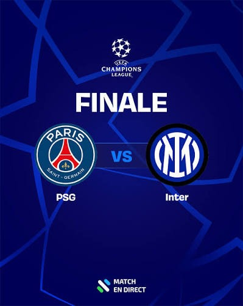
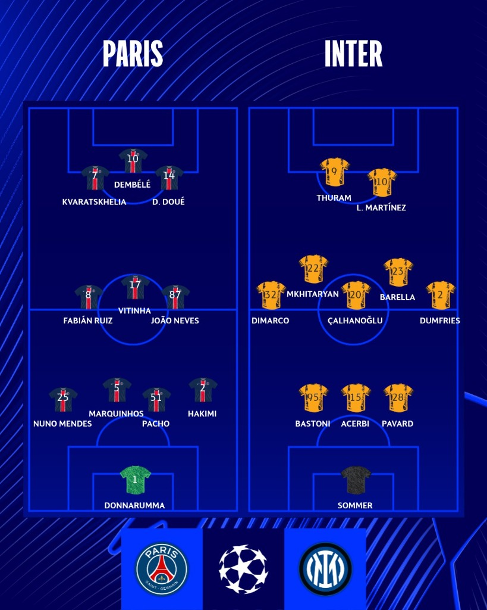

Finale LDC 2025 : PSG vs Inter
Un projet né de la passion : En tant que fervent supporter du Paris Saint-Germain, cela fait maintenant des années qu'on attend avec impatience de voir notre club soulever enfin la prestigieuse Ligue des Champions et décrocher sa toute première étoile européenne. J'ai donc eu envie de concevoir le design complet de cette finale de rêve 2025 purement pour le plaisir et pour le kiff !
Le duel des capitaines au sommet : Sur l'affiche principale, ce sont les deux leaders incontestés de chaque effectif qui sont mis en scène : Marquinhos, capitaine emblématique et muraille défensive du Paris SG, face à Lautaro Martínez, capitaine argentin, renard des surfaces et âme offensive de l'Inter Milan. Ce face-à-face graphique symbolise l'intensité, le charisme et la tension d'un rendez-vous historique pour les deux clubs.
Le parcours des deux équipes lors de cette LDC 2025 :
- Paris Saint-Germain : Une épopée européenne marquée par un renouveau tactique spectaculaire et un esprit d'équipe exemplaire sous les ordres de Luis Enrique. Paris a su braver les pièges des phases à élimination directe grâce à la créativité de son milieu de terrain (Vitinha, João Neves), la solidité de Donnarumma et la vivacité de son attaque emmenée par Dembélé et Kvaratskhelia.
- Inter Milan : Fidèles à leur réputation de forteresse imprenable sous Simone Inzaghi, les Nerazzurri ont réalisé un parcours clinique et autoritaire. Une défense de fer articulée autour de Bastoni et Pavard, un entrejeu ultra-maîtrisé avec Barella et Çalhanoğlu, et un redoutable duo d'attaque Martínez-Thuram leur ont ouvert la route d'une nouvelle finale continentale.
Visuels & éléments graphiques de la finale
Retrouvez l'affiche principale ainsi que les déclinaisons promotionnelles et tactiques imaginées pour cette finale :
Le Choc des Capitaines
Composition explosive et contrastée illustrant l'affrontement direct entre Marquinhos et Lautaro Martínez dans une arène en fusion.

Affiche Officielle du Match
Visuel officiel de diffusion « Match en Direct » aux couleurs emblématiques et graphismes officiels de la Ligue des Champions.

Compositions des Équipes
Dispositif tactique complet de la finale : le 4-3-3 de Paris face au 3-5-2 rigoureux de l'Inter Milan avec le détail des onze titulaires.